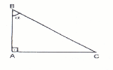

|
Na figura ao lado, o triângulo retângulo ABC tem maior ângulo agudo igual a α, área igual a 6 u.a. e é semelhante ao triângulo de catetos iguais a 6 u.c. e 8 u.c. Nessas condições, pode-se afirmar: |
 |
(01) A altura do triângulo relativa a hipotenusa mede 3 u.c.
(02) A área do círculo circunscrito ao triângulo é igual a 6,25π u.a.
(04) O comprimento da circunferência de centro em B e raio AB mede 6πu.c.
(08) A área do hexágono regular de lado igual a AB mede 18 u.a.
(16) tg α + sen(180o- α) = 32/15
Voltar à Lista de Questões